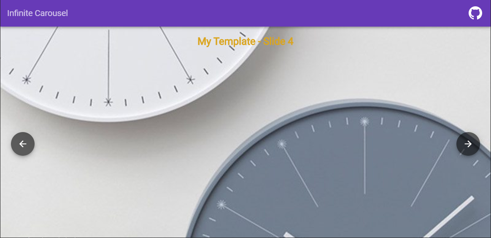
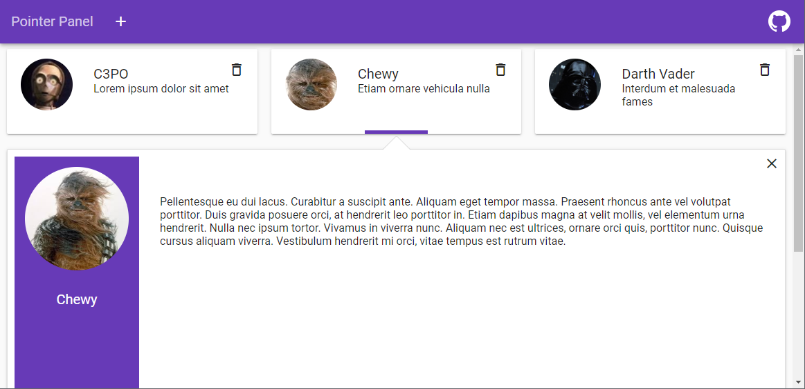
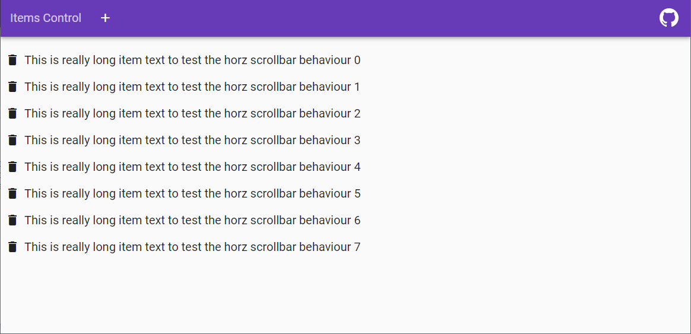

Infinite Carousel
Transitions background images and templates.

Pointer Panel List
Shows details of item by opening the row near selected item in a list.

ItemsControl
A base component that contains the datasource/template bindings. Used by pointer panel and carousel.

Workspace
Provides the scafolding for a responsive layout used for applications that need tools under the router.